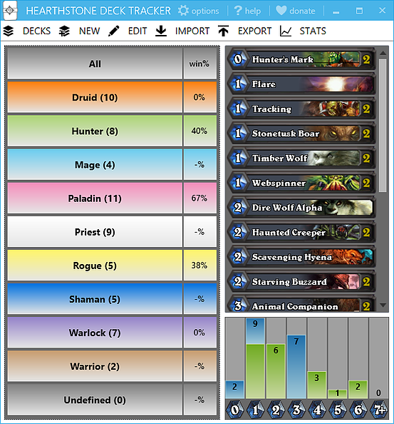

Hearthstone: полезная утилита Deck Tracker
Hearthstone Deck Tracker
Hearthstone Deck Tracker - полезная программа, которая показывает различную информацию внутри игры.
Особенности:
- Показывает оставшиеся и полученные карты из вашей колоды
- Показывает карты, которыми сыграл оппонент
- Показывает как долго оппонент имел каждую карту в руке
- Счет карт в колоде и в руке обоих игроков, а также возможный шанс выпадения карты
- Таймер для текущего хода и общее время, потраченное вами и оппонентом
- Программа пытается автоматически выбрать колоду, которой вы играете
- Карты и таймер могут отображаться в виде наложения (смотрите скриншот) или в дополнительном окне(Настройки> Общие> Дополнительные возможности Windows)
- Встроен менеджер колод с большими функциональными возможностями - импорт колод с известных сайтов, экспорт своих колод и т.д.
- Можно настроить уведомления о начале игры или хода, который отображается в трее Windows
- Каждую функцию можно включить или отключить по отдельности
- Можно вести статистику (победы, поражения, винрейт и т.д), а также экспортировать колоду противника (из увиденных карт)
Как использовать:
- Скачать программу здесь. (зеленая кнопка)
- Извлечь архив
- Запустить "Hearthstone Deck Tracker.exe"
- Создать колоду (кнопка "New") или импортировать ее через любой поддерживаемый сайт
- Играть!
- Создать файл с форматом .bat.
- Открыть файл.
-
Прописать этот код:
@echo off
start "" "C:\Program Files (x86)\Hearthstone\Hearthstone Beta Launcher.exe"
start "" "C:\Program Files (x86)\Hearthstone Deck Tracker\Hearthstone Deck Tracker.exe"
- Windows Vista or higher
- .NET Framework 4.5